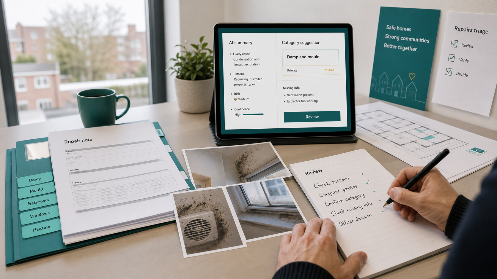

AI Experiment Template
Help housing teams test AI use cases safely — with a housing problem statement, data screen, human oversight controls, baseline measures and a decision framework.
An experiment should answer one question: Is this AI use safe enough, useful enough and measurable enough to continue?

Worked example: Repairs triage
A repairs manager notices staff spend the first part of each morning reading long repair notes, checking photos and asking tenants for missing information. Some jobs are simple. Some may involve damp, mould, safety or vulnerability. The team wants to know if AI can help staff see the important details faster.
The team selects 50 historic repair cases, removes personal details, and asks AI to summarise each note, flag missing information and suggest a category. A repairs officer checks every output against the original record. The final decision stays with the officer.
After two weeks: AI helped with summaries but was weaker at spotting vulnerability clues in messy notes. The team redesigns the prompt, improves the data fields and runs another small test. A useful result — the organisation learned where AI helps, where the workflow is weak, and where human judgement must stay visible.
The experiment template
| Experiment summary | |
|---|---|
| Experiment name | |
| Service area | |
| Experiment owner | |
| Start date | |
| Review date | |
| AI tool or supplier | |
| Type of AI use | Assistant / supplier feature / bespoke model / automation / other |
Section 1: Housing Problem
Write one short paragraph. Start with the service problem, not the tool.
Example: Repairs staff spend time reading long free-text repair notes before deciding the next action. We want to test whether AI can summarise the notes and flag missing information, while staff keep responsibility for the final decision.
Section 2: Proposed AI Use
| What will the AI do? | |
| What will the AI not do? | |
| Who will use it? | |
| Who checks the output? | |
| How can staff reject or correct the output? |
Section 3: Data and Risk Screen
If any answer raises concern, pause and complete a fuller risk review before testing.
Section 4: Human Oversight
| Which human decision stays in place? | |
| What must staff verify before using the output? | |
| What errors are most likely? | |
| How will staff report errors or concerns? | |
| What would cause the experiment to stop? |
Section 5: Baseline and Success Measures
Use at least one quality measure. Time saved is useful but not enough on its own.
| Measure | Current baseline | Target for experiment |
|---|---|---|
| Time taken | ||
| Quality or accuracy | ||
| Staff confidence | ||
| Resident impact | ||
| Error or rework rate |
Section 6: Decision after the experiment
| Decision | Use when |
|---|---|
| Stop | The use case is unsafe, not useful or not worth the effort. |
| Redesign | The idea has value, but the workflow, data or controls need work. |
| Continue testing | More evidence is needed before wider use. |
| Prepare for rollout | Evidence is strong enough for a fuller implementation plan. |
HAILIE reminder
A good experiment is small, honest and reversible. It should produce evidence that leaders can understand: what was tested, what data was used, what changed, what risk appeared and what decision should come next.